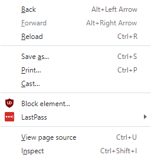

Current project:
This website! This website is a clear work in progress. Some stuff doesn't work, some stuff is incomplete, some needs a bit more interactivity, and there is some obvious work needed on styling, but it is coming along just fine in my opinion.
View the source code:
- To view the source code of this page right click anywhere on the page and you'll get this menu: 
- Click on the button that says "View page source" and you'll get a page that looks like this:
- Your view may be different depending on the browser you are using, but congratulations! You can now take a look at all the interesting elements used to build this website!